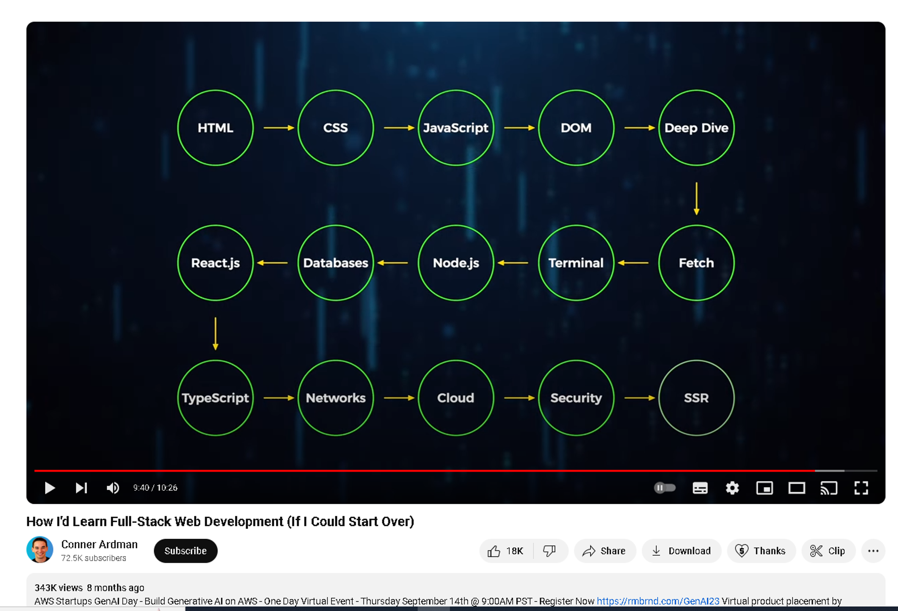
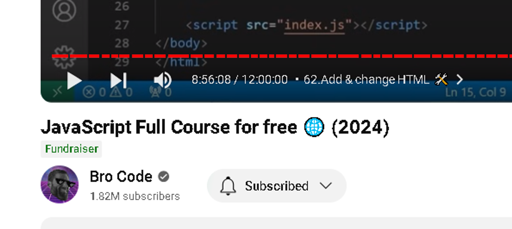

Full stack web development can be an intimidating field, but I've learned that my background in cybersecurity and web app testing has given me an unexpected advantage. Many skills I've acquired in those areas have helped me to understand and navigate full stack development more efficiently.
I recently stumbled upon a YouTube video that presented a comprehensive roadmap to learning full stack web development. To my surprise, I realized I was already familiar with most of the content. It covered HTML, CSS, and JS, all of which I'm comfortable with. Even though my experience in writing JavaScript is limited, I've spent countless hours reading it. A 12-hour JS course could easily fill in any gaps in my knowledge.
The video also discussed the Document Object Model (DOM) from a development perspective. As a security researcher, I'm already quite familiar with what a DOM is. The video was very informative and I highly recommend this YouTube channel for anyone interested in learning programming languages.
If you're experienced with APIs, concepts like fetch become quite comfortable. I already had a good handle on terminal and git, so the next step was Node.js, which could be any backend language. Having used Python extensively, I found Flask very intuitive to learn. With my newfound knowledge of JavaScript, I expect to find Node.js just as intuitive.
Building databases can be challenging, but understanding the structure and query language of different SQL systems gives us an advantage. There are many Object-Relational Mapping (ORM) toolkits that allow you to interact with and build databases in your preferred language. I use SQLAlchemy to interact with databases using Python Flask.
Concepts like networks, cloud, and security are closely tied with cybersecurity, so my background in that field has been beneficial. Looking at the roadmap, I realized I was almost done with the basics, and the main thing I needed to focus on was JavaScript.
The final topics - React.js, TypeScript, and Server Side Rendering (SSR) - are a bit more complex and could take some time to learn. However, they're optional, we now have everything we need in out tool kit to build a full stack web application.
Full stack web development, when approached from a hacker's perspective, reveals a natural synergy. The ability to understand and anticipate potential vulnerabilities inherently enhances one’s development process. By leveraging a solid foundation in HTML, CSS, and JavaScript, along with backend proficiency in Python, transitioning to advanced topics like React.js, TypeScript, and SSR becomes less daunting. Ultimately, the journey of learning full stack development is not just about mastering a set of tools but about integrating them to build secure, efficient, and robust web applications.